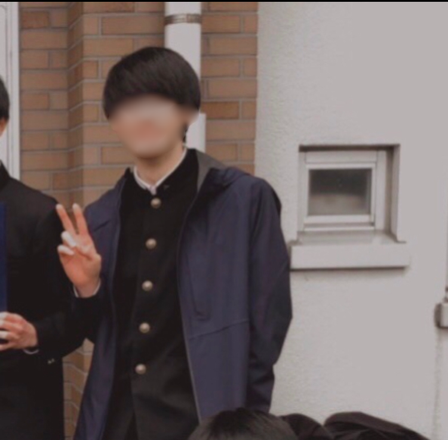

尾方 椋真
開志専門職大学情報学部2年生
開志専門職大学 情報学部2年の尾方です。
現在は大学2年生ということもあり、ある程度大学にも慣れて学業以外にも趣味や資格の勉強、
アルバイトなどにも力を入れています。
最近では、将来のことを深く考えるようになり、日々空き時間や隙間時間に資格取得を目標に勉強を 行なっています。また、アルバイトを始めたことにより人と関わることが多くなったため、これらの経験を糧に コミュニケーション能力を養い、将来に繋げていこうと思っています。
本日は、このような貴重な時間を頂きありがとうございます。どうぞよろしくお願い致します。